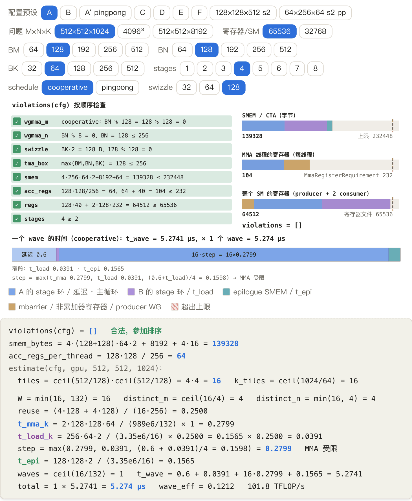
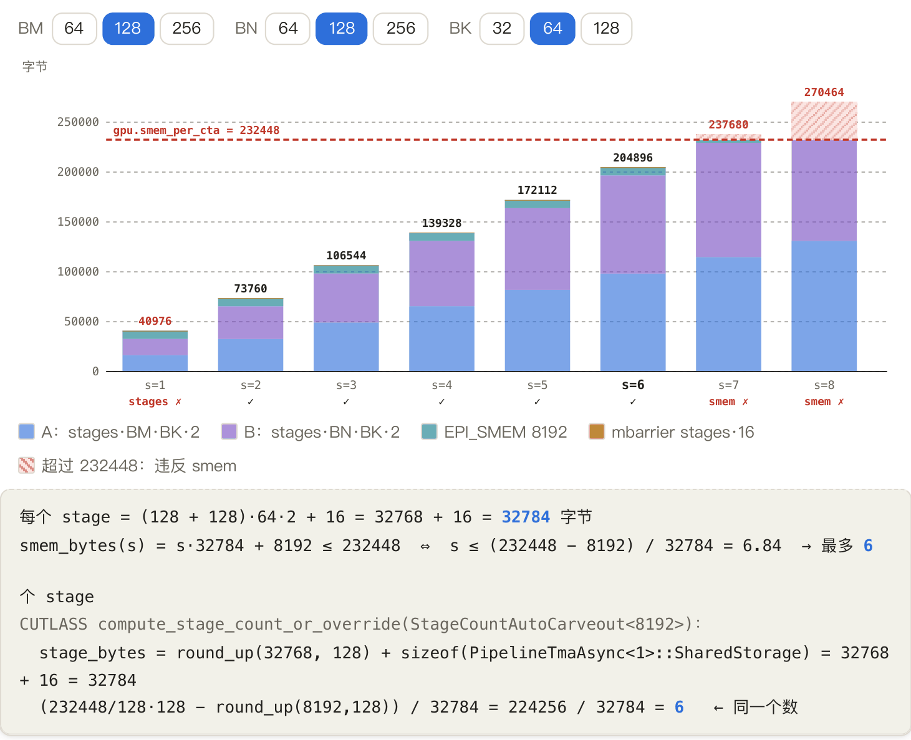
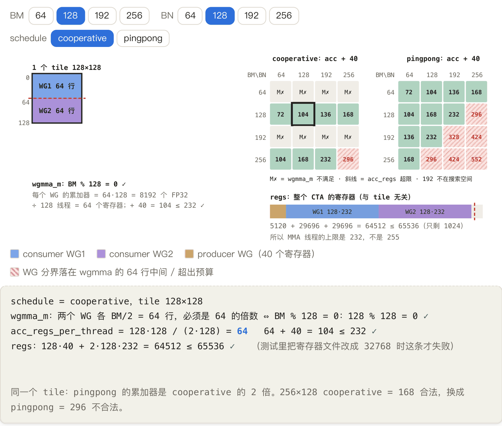
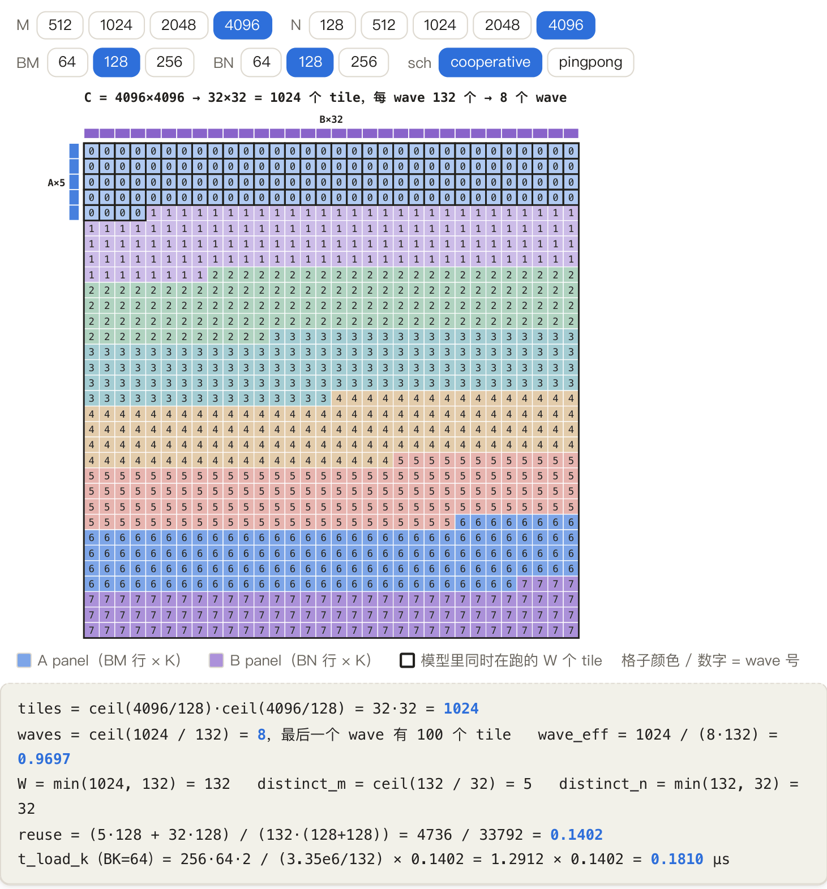
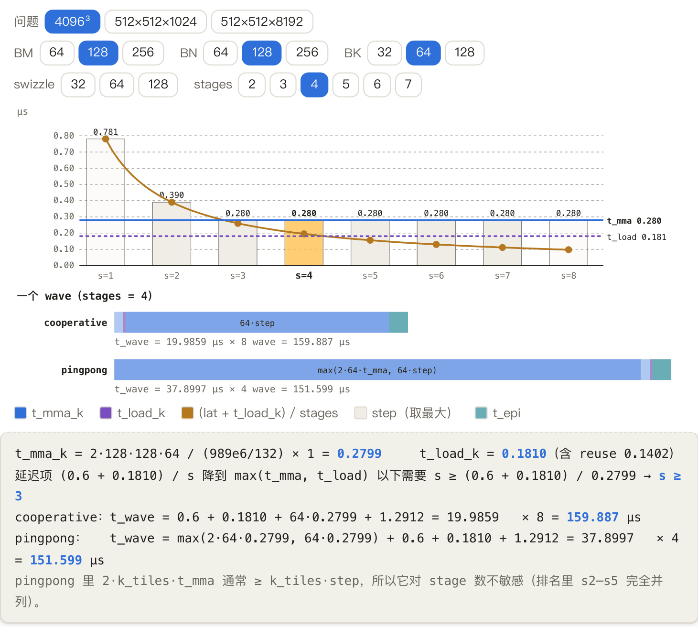
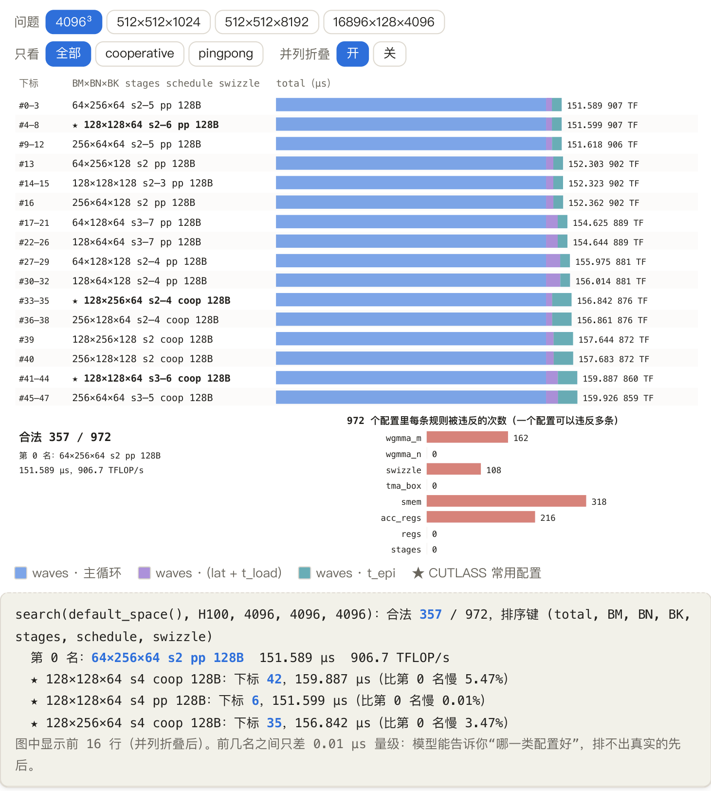

E2 · 选配置：CTA tile、stage 数、cooperative / pingpong 与 swizzle，在硬件约束下用代价模型排序
CuTe 能告诉你一个配置合不合法、能生成它的代码，但不会替你选 tile、stage 数、warp group 安排和 swizzle。本题把 Hopper 上的硬约束（wgmma 形状、TMA box、SMEM 容量、寄存器）写成检查器，再写一个带 L2 复用、wave 量化和流水线延迟的代价模型，在 972 个配置里排序，并和 CUTLASS 常用的选择对照：模型能筛掉不合法的配置、指出趋势，最终选择仍然要实测。
文件: mine/e2_config_search.py 你的代码 · tests/test_e2_config_search.py 测试 · solutions/e2_config_search.py 参考解
题面速览
- 背景知识：Layout Algebra 与编译 里“编译期能检查什么、不能决定什么”，以及 真实代码导读。
- 在体系里的位置：CUTLASS 的 CollectiveBuilder（sm90_gmma_builder.inl）用 SMEM 容量减去 epilogue 的 carveout，再除以每个 stage 的字节数得到 stage 数；kernel 用
LoadRegisterRequirement = 40 / MmaRegisterRequirement = 232重新分配寄存器（D3）。tile 形状和 schedule 则由用户在 CUTLASS 的例子或 profiler 里手选。 - 你要实现：
smem_bytes、acc_regs_per_thread、violations、estimate、search、default_space。常量、GPU、H100_SXM和Config已经给出。 - 关键规则：
- 合法性按固定顺序检查：
wgmma_m、wgmma_n、swizzle、tma_box、smem、acc_regs、regs、stages，返回所有违反的规则。 - cooperative 两个 WG 合算一个 tile（每个 WG 64 行起，所以 BM 要是 128 的倍数），累加器
BM·BN / 256个寄存器每线程；pingpong 每个 WG 持有整个 tile，BM·BN / 128。 - 每个 k-tile 的时间
step = max(t_mma_k, t_load_k, (lat + t_load_k) / stages)：stage 太少时延迟藏不住。 - L2 复用：一个 wave 里同时运行的 tile 共享 A、B panel，只有不同的 panel 才从 HBM 读。
- 排序键是
(total, config)：并列时按配置字段升序，结果确定。
- 合法性按固定顺序检查：
验收要点：smem_bytes(128×128×64, 4) = 139328、累加器寄存器 64 / 128 · 每条规则各一个违反的例子 · 多条违反按顺序全报 · regs 规则读 GPU 的寄存器文件 · 128×128×64×4 cooperative 的 tiles / waves / step / total / TFLOP/s · pingpong 的 waves 与 total · 2 个 stage 比 4 个慢（216.5 vs 159.9 µs）· 窄 swizzle 更慢 · L2 复用降低 step · 搜索空间 972 个、合法 357 个、排序与第一名、并列时的次序 · 小问题选小 tile。
- wgmma（warpgroup MMA）：Hopper 的 tensor core 指令，一个 warp group 一次算 M = 64、N ∈ {8, 16, …, 256} 的块。
- cooperative / pingpong：CUTLASS sm90 的两种 warp-specialized kernel schedule（D3）。
- wave：GPU 一次能同时放下的 CTA 数（这里每个 SM 一个）。tiles 不是 SM 数的整数倍时，最后一个 wave 不满，叫 wave quantization（波量化）损失。
- carveout：从 SMEM 里预留给 epilogue 等其他用途的字节数，剩下的才给主循环的 stage。
- roofline：时间取“算力限制”和“带宽限制”中较大的一个。
直觉与类比
SM 是一间工作室，SMEM 是工作台面积，寄存器是每个工人手边的抽屉。tile 越大，一次加工的件越多、来回搬料的次数越少（算术强度高），但工作台要放得下 stages 份料（smem），工人的抽屉要放得下手上的半成品（累加器寄存器）。stage 数是台面上同时摆几份料：太少，工人做完一份要等下一份从仓库运来（延迟藏不住）；太多，台面放不下。pingpong 像两个工人共用一台机器：一个在打包（epilogue）时另一个用机器，机器不闲着，但每个人的抽屉要放下整件半成品。最后，100 份订单分给 132 间工作室，有 32 间闲着；1024 份订单要 8 轮，最后一轮只开 100 间：这就是 wave 量化。
图解：一个配置的生死与快慢
从小例子开始：先在草稿纸上手算
先别管 972 个配置。拿一个小问题、两三个配置，把每条约束、代价模型的每一项都在纸上代一遍数，搞清楚“一个配置怎样被判死刑、活下来的怎样被打分”；再放大到测试里的 4096³；然后看一个所有 tile 都能在一个 wave 里放下的边界情况；最后写成一般公式。
① 小：M=N=512，K=1024，手算 3 个配置
C 被 128×128 切成 4×4 = 16 个 tile，一个 wave 就装下了；每个 CTA 的 K 循环 16 轮。
A 128×128×64 s4 coop 5.274 µs
B 同 A，stages=2 5.909 µs
（延迟藏不住）
C 256×256×64 s2 coop ✗ acc_regs
（256 + 40 > 232）
② 中：测试的运行例子 4096³
1024 个 tile，8 个 wave，L2 复用让每个 CTA 只需读 14% 的 panel。
128×128×64 s4 coop 159.887 µs #42
同上 pingpong 151.599 µs #6
64×256×64 s2 pp 151.589 µs #0
③ 边界：一个 wave 装下全部 tile
tiles ≤ 132 时 t_load_k 和 t_epi 与 tile 形状无关（见草稿纸第 5 步），只剩 MMA 时间：tile 越小，开的 SM 越多。
512×512×8192：
64×64×64 s5 pp 18.709 µs #0
128×128×64 s4 coop 36.623 µs #77
④ 一般
约束是 8 个独立的不等式；代价是“每轮取最慢的一项 × 轮数 + 固定开销”，再乘 wave 数。
合法 ⇔ 8 条规则全满足
step = max(t_mma, t_load,
(lat+t_load)/stages)
total = waves · (lat + t_load
+ 主循环 + t_epi)
✎ 草稿纸：H100，M=N=512，K=1024；配置 A = 128×128×64，stages=4，cooperative，128B swizzle
0) 常量 sms = 132 SMEM 上限 232448 B 寄存器 65536/SM HBM 3.35e6 B/µs tensor 989e6 FLOP/µs lat = 0.6 µs
每个 SM 的算力 = 989e6 / 132 = 7492424 FLOP/µs
1) 形状约束（逐条，按顺序）
wgmma_m cooperative：BM % 128 = 128 % 128 = 0 ✓ （两个 WG 各 64行）
wgmma_n BN % 8 = 0 且 BN = 128 ≤ 256 ✓
swizzle BK·2 = 64·2 = 128 B，128 % 128 = 0 ✓ （K-major 一行正好一个 SW128 atom 行）
tma_box max(128, 128, 64) = 128 ≤ 256 ✓
2) 资源约束
smem 4·(128+128)·64·2 + 8192 + 4·16 = 131072 + 8192 + 64 = 139328 ≤ 232448 ✓
acc_regs 128·128 / 256 = 64；64 + 40 = 104 ≤ 232 ✓
regs 128·40 + 2·128·232 = 5120 + 59392 = 64512 ≤ 65536 ✓ （和配置无关，只看
GPU）
stages 4 ≥ 2 ✓ → violations = []
3) 网格与 wave
tiles_m = ceil(512/128) = 4 tiles_n = 4 tiles = 16 k_tiles = ceil(1024/64) = 16
W = min(16, 132) = 16（同时在跑的 CTA） waves = ceil(16/132) = 1 wave_eff =
16/132 = 0.1212
4) L2 复用：16 个 tile 排成 4×4，全部同时在跑
distinct_m = ceil(16/4) = 4 distinct_n = min(16, 4) = 4
reuse = (4·128 + 4·128) / (16·(128+128)) = 1024 / 4096 = 0.25
5) 一个 k-tile
t_mma_k = 2·128·128·64 / 7492424 × 1.0 = 2097152 / 7492424 = 0.2799 µs
每 CTA 带宽 = 3.35e6 / 16 = 209375 B/µs
t_load_k = (128+128)·64·2 / 209375 × 0.25 = 0.1565 × 0.25 = 0.0391 µs
↑ 其实 = (M+N)·BK·2 / HBM = 1024·128 / 3.35e6：只要一个 wave 装得下，就和
BM、BN 无关
藏延迟 = (0.6 + 0.0391) / 4 = 0.1598 µs
step = max(0.2799, 0.0391, 0.1598) = 0.2799 ← MMA 受限
t_epi = 128·128·2 / 209375 = 0.1565 µs （= M·N·2 / HBM，同样和 tile 无关）
6) cooperative 的一个 wave
t_wave = lat + t_load_k + k_tiles·step + t_epi = 0.6 + 0.0391 + 16·0.2799 + 0.1565 = 0.6 + 0.0391 + 4.4784 + 0.1565 = 5.2741
total = 1 × 5.2741 = 5.274 µs TFLOP/s = 2·512·512·1024 / 5.2741 / 1e6 = 101.8 B) 同 A，stages = 2
藏延迟 = 0.6391 / 2 = 0.3196 > 0.2799 → step = 0.3196（延迟受限）
t_wave = 0.6 + 0.0391 + 16·0.3196 + 0.1565 = 5.9086 µs → 慢 12%，90.9 TFLOP/s
A') 同 A，换成 pingpong
acc_regs = 128·128 / 128 = 128；128 + 40 = 168 ≤ 232 ✓ waves = ceil(16 / 264) = 1
t_wave = max(2·16·0.2799, 16·0.2799) + 0.6 + 0.0391 + 0.1565 = 8.9569 + 0.7956 = 9.7525 µs
← 模型让两个 tile 挤在同一个 SM 上轮流用 tensor core，116 个 SM 却闲着：小问题上 pingpong反而慢
C) 256×256×64，stages=2，cooperative
smem = 2·512·64·2 + 8192 + 32 = 139296 ✓；acc = 256·256/256 = 256，256 + 40 = 296 > 232 → ['acc_regs']
D) 64×128×64 cooperative：64 % 128 ≠ 0 → ['wgmma_m']（pingpong
就合法）
E) 128×128×32，128B swizzle：BK·2 = 64 B，64 % 128 ≠ 0 → ['swizzle']（换 64B
swizzle 就合法）
F) 128×128×64，stages=7：7·32768 + 8192 + 112 = 237680 > 232448 → ['smem']
7) 全搜索（972 个配置）：357 个合法；第 0 名 64×64×64 s5 pingpong 3.035 µs，
和 128×64×64 s5 cooperative 完全并列（按 BM 升序打破平局）；A 排在第 77 名。
下面这张图就是“配置构造器”：随便拼一个配置，左边逐条检查 8 条规则（顺序和 violations 一致），右边是 SMEM 和寄存器的预算条，底部是一个 wave 的时间分解。下方面板打印 violations 、smem_bytes 、acc_regs_per_thread 和estimate 每一步代入后的数。先点“配置预设”里的 A–F 对照上面的草稿纸，再自己改。BM / BN 里的 192、512，BK 里的 256、512 和 stages = 1、8 不在 default_space 里，是为了让你看到每条规则失败的样子。

图解详解：约束、代价与排序
这些图是交互版讲解页的静态快照，显示的是默认参数下的状态。文中提到的按钮、滑块和悬停提示在这里不能操作；图上的数字和下方的文字、表格、黑底面板说的是同一组值，可以直接对照你的函数输出。
上面的构造器把所有东西放在一张图里。这一节把它拆开，一张图只讲一件事：SMEM 决定 stage 数的上限、wgmma 形状和累加器决定 tile 和 schedule 能不能配、tile 网格决定 wave 数和 L2 复用、stage 数决定延迟能不能藏住，最后是 972 个配置的排名和每一项代价的占比。每张图下方的面板都会把当前状态代入公式算给你看。
整道题的骨架就是下面这段代码，后面的五张图依次对应其中一部分：
space = default_space() # 3·3·3·6·2·3 = 972 个配置
legal = [c for c in space if not violations(c, gpu)] # 图 1（smem / stages）、图 2（wgmma_m
for c in legal:
e = estimate(c, gpu, M, N, K) # 图 3（tiles / waves / reuse）、图 4（s
ranked = sorted(..., key=lambda ce: (ce[1]["total"], ce[0])) # 图 5（排名 + 代价分解）
图 1 · SMEM 预算：smem_bytes 和最多几个 stage
每个 stage 放一块 A（BM×BK）和一块 B（BN×BK），外加两个 8 字节的 mbarrier；epilogue 固定占 8192 字节。柱子按 stages = 1…8 画出来，红色虚线是 232448 字节的上限。看三件事：① 柱子的增长是线性的，每多一个 stage 多
(BM+BN)·BK·2 + 16 字节；② 128×128×64 最多 6 个 stage，256×256×64 只能 3 个；③ stages = 1 永远违反 stages ，8 不在搜索空间里。

本题的 smem 规则就是把 CUTLASS 的除法反过来写成不等式：
compute_stage_count_or_override(StageCountAutoCarveout) 先把 stage 字节数按 128 对齐、加上 PipelineTmaAsync::SharedStorage （一个 full、一个 empty mbarrier，共 16 字节），再用 sm90_smem_capacity_bytes 减 carveout 去除。
图 2 · wgmma 形状与累加器：wgmma_m 、acc_regs 、regs
wgmma 一条指令让一个 warp group（128 线程）算 64 行。左边把 tile 按 64 行一条切开，并涂上负责它的 WG 的颜色。cooperative：两个 WG 平分一个 tile，WG1 拿上半 BM/2 行，WG2 拿下半；BM = 64 或 192 时分界线会落在一条 64 行的中间（红色斜线），所以要求 BM % 128 = 0。pingpong：每个 WG 拿一个完整的 tile（画成两个 tile），BM % 64 = 0 即可，但每个线程的累加器多一倍。右边两张表把 3×3（加上 192）个 tile 的 acc + 40 全部列出来，超过 232 的是红色。

真实的 CUTLASS 里，cooperative kernel 用 static_assert(size<0>(TileShape{}) >= 128) 检查 M 方向（只要求 ≥128，本题简化成 BM % 128 = 0），两个 WG 沿 M 平分 tile；寄存器重新分配用的是 LoadRegisterRequirement / MmaRegisterRequirement ，在 producer 分支里 warpgroup_reg_dealloc<40> 、consumer 分支里
warpgroup_reg_alloc<232> 。wgmma 的形状表见 PTX ISA 的 Asynchronous Warpgroup Level Matrix Multiply-
Accumulate。swizzle 规则对应 Layout_K_SW32/64/128_Atom_Bits ：一行是 256 / 512 / 1024 位，即 32 / 64 / 128 字节；ss_smem_selector 的 K-major 分支 按 BK 从 SW128 往下选第一个能整除的。
图 3 · tile 网格、wave 量化与 L2 复用
C 被切成 tiles_m × tiles_n 个 tile，按行主序编号，每 132 个（pingpong 是 264 个）组成一个 wave，格子的颜色和数字就是 wave 号。粗框是模型里“同时在跑”的 W = min(tiles, 132) 个 tile：它们一共只用到左边橙色的 distinct_m 条 A panel 和上边紫色的 distinct_n 条 B panel，只有这些需要从 HBM 读，这就是 reuse 。试试：4096×4096 用 128×128 是 8 个 wave、最后一个只有 100 个 tile；M = N = 512 时整个 C 一个 wave 就装下了，132 个 SM 里大半在闲着。

试一下 N = 128 、M = 4096 、BM = BN = 128：只有一列 tile，distinct_n = 1 ，但 32 条 A panel 全都不同，reuse = (32·128 + 128) / (32·256) ≈ 0.52，远比方阵的 0.14 差，这就是测试 test_l2_reuse_lowers_load_time 想说明的事。真实 kernel 里 tile 的发射顺序由 tile scheduler 决定（例如 sm90_tile_scheduler.hpp 的 swizzle / raster 选项），复用并不是公式里的常数。
图 4 · 一个 k-tile 的 step、stage 数与一个 wave 的时间
上半部分：横轴是 stage 数，三条线分别是 t_mma_k （和 stage 无关）、t_load_k （和 stage 无关）和 (lat + t_load_k) / stages （随 stage 下降的双曲线）；灰色柱子是 step = 三者中最大的。曲线落到 t_mma_k 以下之后，再加 stage 没有任何收益。下半部分用同一个配置画出 cooperative 和 pingpong 的一个 wave：pingpong 把两个 tile 的 MMA 串起来（2·k_tiles·t_mma_k ），换来一半的 wave 数和被藏住的 epilogue。

stage 数在真实 kernel 里就是 PipelineTmaAsync 的环形 buffer 长度：producer 最多可以领先 consumer stages 个 k-tile 发 TMA。cooperative 和 pingpong 两种设计的文字说明见 efficient_gemm.md 的 warp-specialized 一节，流水线的 producer / consumer 协议见 pipeline.md 。
图 5 · 搜索：972 个配置的排名与代价分解
每一行是一个合法配置（或者一组 total 完全相同、只差 stage 数的配置），条的长度是 total ，拆成三段：waves·主循环、waves·(lat + t_load) 、waves·t_epi 。左边的数字是 search 返回列表里的下标（从 0 开始，和测试一致）。★ 是 CUTLASS 常用的三个配置。切换问题看排名怎么变：4096³ 上大 tile、pingpong 领先；512×512 上小 tile 领先，因为一个 wave 就装下所有 tile，只有每个 tile 的 MMA 时间重要。右下角是 972 个配置里每条规则被违反的次数（和问题无关）。

真实系统里这一步是 CUTLASS Profiler ：它把实例化好的 kernel 在目标形状上逐个实测。本题的 search 只做到“剪枝 + 粗排”，前 k 名仍然要交给 profiler。
速查
| 量 | 公式 | 4096³、128×128×64 s4 coop | 512²×1024、同一配置 |
|---|---|---|---|
smem_bytes |
stages·(BM+BN)·BK·2 + 8192 + stages·16 |
139328 | 139328 |
acc_regs_per_thread |
coop BM·BN/256 ，pp BM·BN/128 |
64 | 64 |
| 最多几个 stage | floor((232448 − 8192) / ((BM+BN)·BK·2 + 16)) |
6 | 6 |
tiles 、k_tiles |
ceil(M/BM)·ceil(N/BN) 、ceil(K/BK) |
1024、64 | 16、16 |
W 、distinct_m 、distinct_n |
min(tiles, sms) 、ceil(W/tiles_n) 、min(W, tiles_n) |
132、5、32 | 16、4、4 |
reuse |
(dm·BM + dn·BN) / (W·(BM+BN)) |
0.1402 | 0.25 |
t_mma_k |
2·BM·BN·BK / (flops/sms) · SWIZZLE_MMA_FACTOR |
0.2799 | 0.2799 |
t_load_k |
(BM+BN)·BK·2 / (hbm/W) · reuse |
0.1810 | 0.0391 |
step |
max(t_mma_k, t_load_k, (lat + t_load_k)/stages) |
0.2799 | 0.2799 |
t_epi |
BM·BN·2 / (hbm/W) |
1.2911 | 0.1565 |
waves |
coop ceil(tiles/sms) ，pp ceil(tiles/(2·sms)) |
8 | 1 |
t_wave |
coop lat + t_load + k_tiles·step + t_epi ；pp max(2·k_tiles·t_mma, k_tiles·step) + lat + t_load + t_epi |
19.9859 | 5.2741 |
total 、TFLOP/s |
waves·t_wave 、2·M·N·K / total / 1e6 |
159.887、859.6 | 5.274、101.8 |
wave_eff |
tiles / (waves·sms·(2 if pp else 1)) |
0.9697 | 0.1212 |
逐步演示
4 × (128 + 128) × 64 × 2 + 8192 + 4 × 16 = 139328 字节 < 232448。按同样的公式，同一个 tile 最多能放 (232448 − 8192) / (32768 + 16) = 6 个 stage；本模型里 7 个 stage 是 237680 字节（7·32768 + 8192 + 7·16），违反 smem。
cooperative 每个 MMA 线程持有 128·128 / 256 = 64 个 FP32 累加器，加上 40 个其他寄存器 = 104 ≤ 232。256×256 cooperative 要 256 个，违反 acc_regs；256×128 cooperative 正好 128 + 40 = 168，合法，但同一个 tile 换成 pingpong 就是 256，不合法。
t_mma_k = 2·128·128·64 / (989e6 / 132) = 0.2799 µs。1024 个 tile、每 wave 132 个，同一个 wave 里只有 ceil(132/32) = 5 个不同的 A panel 和 32 个不同的 B panel，复用系数 (5·128 + 32·128) / (132·256) = 0.140，t_load_k = 0.181 µs（每个 CTA 只分到 1/132 的 HBM 带宽）。step = max(0.2799, 0.181, (0.6 + 0.181)/4 = 0.195) = 0.2799：计算受限。
同一个 tile 只给 2 个 stage：(0.6 + 0.181) / 2 = 0.3905，超过了 t_mma_k，step 变成 0.3905，总时间从 159.9 涨到 216.5 µs。这就是 D2、E1 里看到的“延迟藏不住”。
1024 / 132 = 7.76，要 8 个 wave，效率 1024 / 1056 = 0.970。t_wave = 0.6 + 0.181 + 64·0.2799 + t_epi = 19.99 µs，total = 8 × 19.99 = 159.887 µs，859.6 TFLOP/s。
每个 SM 同时处理两个 tile，wave 数降到 4，但两个 WG 共用 tensor core：t_wave = max(2·64·0.2799, 64·0.2799) + …，总时间 151.6 µs，比 cooperative 快 5%：多出来的是 epilogue 和 load 尾巴被另一个 WG 的 MMA 藏住了。这和 D3 的结论一致：epilogue 不超过 MMA 的两倍时 pingpong 不慢。
在整个默认搜索空间（972 个配置，合法 357 个）里，模型的第一名是 64×256×64、pingpong、2 stages（906.7 TFLOP/s，前几名并列，只有 stage 数不同）。常见的 CUTLASS 选择 128×128×64 cooperative 4 stages 排第 43，128×256×64 cooperative 排第 36，64×128×64 pingpong 排第 19。模型认为它们差距不大，排名对这些细节非常敏感：这正是“最后一步要实测”的原因。
易错点
- cooperative 只要求 BM % 64。 两个 WG 各 64 行起步，BM 必须是 128 的倍数。测试
test_violations里 64×128 cooperative 报wgmma_m、pingpong 合法。 - 只返回第一个违反的规则。 128×128×512 同时违反
tma_box和smem，测试要求两个都报、按固定顺序。 - 累加器按 tile 总量算，不分 schedule。 pingpong 每个 WG 持有整个 tile，寄存器翻倍。测试
test_smem_and_acc_regs。 - t_load 用整块 HBM 带宽。 132 个 CTA 同时读，每个 CTA 只分到 1/132（再乘复用系数）。不这样做的话所有配置都被判成计算受限，
test_too_few_stages_expose_latency会失败。 - swizzle 只当合法性检查。 窄 swizzle 合法但慢（MMA 读 SMEM 有 bank 冲突），不乘系数时 32B swizzle 会和 128B 并列，排序变得没有意义。测试
test_narrow_swizzle_slows_mma。 - 排序不稳定。 很多配置的 total 完全相同（pingpong 在计算受限时与 stage 数无关），只按 total 排序时结果依赖输入顺序。测试
test_search_breaks_ties_by_config_fields。
对照文档
“不要误解为：CuTe 会自动搜索所有 CTA tile、warp 数、pipeline stage、swizzle 和 scheduler 参数，并保证找到全局最优 kernel。它提供的是可组合的表达、静态推导、合法性检查和代码生成路径；性能搜索通常还需要人工设计搜索空间、autotuning 和实机 profiling。”
本题把这句话拆成三步：violations 是“合法性检查”（C2 的 CUTLASS 层），estimate 是“代价模型”（排除明显差的），search 是“搜索空间”。缺的那一步是实机 profiling：模型里 64×256 pingpong 和 128×128 pingpong 只差 0.01 µs，真实 GPU 上谁快取决于模型没写进去的东西（L2 命中率的细节、指令发射、epilogue 和 TMA store 的争用）。
真实代码
简化自 compute_stage_count_or_override ：
template<int capacity_bytes_, class ElementA, class ElementB, class TileShapeMNK, int alig
constexpr int compute_stage_count_or_override(StageCountAutoCarveout<carveout_bytes_>) {
constexpr auto mainloop_pipeline_bytes = sizeof(typename cutlass::PipelineTmaAsync<1>::S
constexpr int stage_bytes_ = bits_to_bytes(a_bits * BM * BK) + bits_to_bytes(b_bits * BN
constexpr int stage_bytes = round_up(stage_bytes_, alignment) + mainloop_pipeline_bytes
return (capacity_bytes - round_up(carveout_bytes_, alignment)) / stage_bytes;
}
本题的 smem_bytes 就是把这个除法反过来：stages·(BM + BN)·BK·2 + EPI_SMEM + stages·16 ，BARRIER_SMEM_PER_STAGE = 16 是 PipelineTmaAsync<1>::SharedStorage 的两个 8 字节 mbarrier。example 49 里 carveout 传的是 sizeof(CollectiveEpilogue::SharedStorage) （49_collective_builder.cu ），本题用固定的 EPI_SMEM = 8192 代替。
寄存器分配简化自 cooperative kernel （pingpong 的 同名常量 也是 40 / 232）：
static constexpr uint32_t LoadRegisterRequirement = !HeavyRegisterPressure ? 40 : 24;
static constexpr uint32_t MmaRegisterRequirement = !HeavyRegisterPressure ? 232 : 240;
// 128·40 + 2·128·232 = 64512 ≤ 65536：本题的 "regs" 规则
| 本题的规则 / 模型 | 真实系统 |
|---|---|
wgmma_m 、wgmma_n |
builder 里对 tile shape 的 static_assert ；wgmma 的 M = 64、N 是 8 的倍数且≤ 256 |
swizzle 、tma_box |
ss_smem_selector 按 BK 的字节数选 SW128 / SW64 / SW32；TMA box 每维 ≤256 |
smem 、stages |
compute_stage_count_or_override |
acc_regs 、regs |
MmaRegisterRequirement ；超出时编译器 spill，ptxas -v 能看到 |
SWIZZLE_MMA_FACTOR |
没有对应的公式，只能实测 |
estimate 、search |
CUTLASS Profiler（cutlass_profiler --operation=gemm … ）或 cuBLASLt heuristics + 实测 |
上机验证
DRILL_IMPL=solutions python3 -c "
from drill import load
m = load('e2_config_search')
r = m.search(m.default_space(), m.H100_SXM, 4096, 4096, 4096)
for c, e in r[:5]: print(c, round(e['total'], 2), round(e['tflops'], 1))"
H100_SXM 是示例规格（132 个 SM、每 CTA 最多 232448 字节 SMEM、3.35 TB/s、989 TFLOP/s dense FP16）。真机上可以用 CUTLASS profiler（cutlass_profiler --operation=gemm --m=4096 --n=4096 --k=4096）对同样的候选测时间，看模型的排名和实测差多少（本机没有 GPU，未运行）。RTX 5090 的规格完全不同（170 个 SM、每 SM 128 KB 级的 SMEM、没有 WGMMA），要换一套 GPU(...) 参数和约束才有意义。
三级提示
L1I/O 例子和关键问题方向（轻度剧透）
violations(Config(128, 128, 512, 2), H100_SXM) # ['tma_box', 'smem']
violations(Config(256, 256, 64, 2), H100_SXM) # ['acc_regs']
e = estimate(Config(128, 128, 64, 4), H100_SXM, 4096, 4096, 4096)
e["waves"], round(e["step"], 4), round(e["total"], 3) # (8, 0.2799, 159.887)
estimate(Config(128, 128, 64, 2), H100_SXM, 4096, 4096, 4096)["total"] # 216.502…
r = search(default_space(), H100_SXM, 4096, 4096, 4096)
len(default_space()), len(r) # (972, 357)
search(default_space(), H100_SXM, 512, 512, 8192)[0][0] # 64×64×64, stages=5, pingpong
关键问题
- 为什么 pingpong 的累加器寄存器是 cooperative 的两倍？这对 tile 大小意味着什么？
- 为什么 stage 数在计算受限时“够了就不再有用”？在什么问题形状下会重新变得重要？
- 512×512×8192 这种 M、N 小、K 大的问题，为什么模型选小 tile？真实世界里还有什么办法（提示：split-K、stream-K）？
L2思路拆解与常见坑拆解与常见坑（中度剧透）
smem_bytes和acc_regs_per_thread：照公式写。violations：八个 if，按顺序 append。estimate：先算 tiles、k_tiles、W = min(tiles, sms)、复用系数；再算t_mma_k、t_load_k、step、t_epi；最后按 schedule 算 waves 和t_wave。search：过滤 → 估算 → 按(total, config)排序（Config是order=True的 dataclass，可以直接比较）。default_space：itertools.product六个维度。
L3关键问题的答案几乎是答案（重度剧透）
答案
- cooperative 两个 WG 平分一个 tile 的累加器，pingpong 每个 WG 持有一个完整 tile。同样 232 个寄存器的预算，pingpong 的 tile 面积只能是 cooperative 的一半（例如 64×256 或 128×128 对 128×256）。
- stage 只用来藏延迟：只要
(lat + t_load) / stages ≤ max(t_mma, t_load)，再加 stage 只占 SMEM，不缩短 step。延迟相对计算变大时（K 小的 tile、带宽受限的形状、或 TMA 延迟有抖动）它又重要了。 - 只有 (512/BM)·(512/BN) 个 tile：大 tile 只能开很少几个 CTA，大部分 SM 空着（wave 效率极低）。小 tile 让 64 个 CTA 同时跑。真实世界还会用 split-K / stream-K 把 K 方向也切开，让更多 SM 参与，最后再归约。
参考解
✓solutions/e2_config_search.py先自己写完、跑过测试再看
"""E2 · 选配置：CTA tile、stage 数、warp group 安排与 swizzle，在硬件约束下用代价模型排序 —reference solution.
文档的结论之一：CuTe 不会自动搜索 tile、stage、warp 数和 swizzle；它提供合法性检查和代码生成，性能选择要靠
设计好的搜索空间 + 代价模型 + 实测。CUTLASS 的 CollectiveBuilder（include/cutlass/gemm/collective/builders/
sm90_gmma_builder.inl）用 StageCountAutoCarveout 按 shared memory 容量算 stage 数；kernel 的寄存器分配见
sm90_gemm_tma_warpspecialized_cooperative.hpp 里的 LoadRegisterRequirement = 40 / MmaRegisterRequirement = 232。
这道题把这些约束和一个简化的代价模型写出来，在小搜索空间里排序，并和常见的 CUTLASS 选择对照。
数据（given）
- GPU(sms, smem_per_cta, regs_per_sm, hbm_bytes_per_us, tensor_flops_per_us, tma_lat_us)：H100_SXM 是示例规格
（132 个 SM、每 CTA 最多 232448 字节 SMEM、每 SM 65536 个寄存器、3.35 TB/s、989 TFLOP/s dense FP16）。
- Config(BM, BN, BK, stages, schedule, swizzle_bytes)：schedule ∈ {"cooperative", "pingpong"}；
cooperative = 2 个 consumer WG 合作算一个 BM×BN tile（各算 BM/2 行）；pingpong = 2 个consumer WG 各算一个完整的
BM×BN tile、轮流做 MMA 和 epilogue。两者都有 1 个 producer WG。swizzle_bytes ∈ {32, 64, 128}。
- 常量：ELEM_BYTES = 2（FP16/BF16 输入），ACC_BYTES = 4（FP32 累加），LOAD_REGS = 40，MMA_REGS = 232，
ACC_REG_OVERHEAD = 40（MMA WG 里除累加器外的寄存器），EPI_SMEM = 8192（epilogue 用的 SMEM），
BARRIER_SMEM_PER_STAGE = 16，MAX_BOX = 256（TMA box 每一维最多 256 个元素），
SWIZZLE_MMA_FACTOR = {128: 1.0, 64: 1.25, 32: 1.5}（swizzle 越窄，MMA 从 SMEM 读 operand 时 bank 冲突越多，粗略放大 MMA 时间）。
你要实现
violations(cfg, gpu) -> list[str] 按下面的顺序检查，返回违反的规则名（都满足时返回[]）：
"wgmma_m" cooperative 时 BM % 128 != 0；pingpong 时 BM % 64 != 0（每个 WG的 wgmma M = 64）
"wgmma_n" BN % 8 != 0 或 BN > 256
"swizzle" BK·ELEM_BYTES 不是 swizzle_bytes 的整数倍（K-major 的 swizzle atom 一行正好是 swizzle_bytes）
"tma_box" BM、BN、BK 中任何一个 > MAX_BOX
"smem" smem_bytes(cfg) > gpu.smem_per_cta
"acc_regs" acc_regs_per_thread(cfg) + ACC_REG_OVERHEAD > MMA_REGS
"regs" (128·LOAD_REGS + 2·128·MMA_REGS) > gpu.regs_per_sm
"stages" stages < 2
smem_bytes(cfg) = stages·(BM + BN)·BK·ELEM_BYTES + EPI_SMEM + stages·BARRIER_SMEM_PER_STAGE
acc_regs_per_thread(cfg)：累加器是 FP32，每个寄存器 4 字节存 1 个值。
cooperative：BM·BN / (2·128)；pingpong：BM·BN / 128（每个 WG 持有整个 tile 的累加器）。
estimate(cfg, gpu, M, N, K) -> dict 代价模型（时间单位 µs）：
tiles = ceil(M/BM)·ceil(N/BN)；k_tiles = ceil(K/BK)；waves = ceil(tiles / sms)
每个 k-tile：t_mma_k = 2·BM·BN·BK / (gpu.tensor_flops_per_us / sms) · SWIZZLE_MMA_FACTOR[swizzle_bytes]
t_load_k = (BM + BN)·BK·ELEM_BYTES / (gpu.hbm_bytes_per_us / sms_active)
其中 sms_active = min(tiles, sms)（同时在跑的 CTA 平分带宽），
再乘 L2 复用系数 reuse（见下）。
L2 复用：一个 wave 里同时有 W = min(tiles, sms) 个 tile，按行主序排在 tiles_n = ceil(N/BN) 列的网格上，
distinct_m = ceil(W / tiles_n)，distinct_n = min(W, tiles_n)；
reuse = (distinct_m·BM + distinct_n·BN) / (W·(BM + BN))（只有不同的panel 才需要从 HBM 读）。
流水线：step = max(t_mma_k, t_load_k, (gpu.tma_lat_us + t_load_k) / stages)（stage 不够时延迟藏不住）
t_epi = BM·BN·ELEM_BYTES / (gpu.hbm_bytes_per_us / sms_active)（写回 C tile）
cooperative：waves = ceil(tiles / sms)，t_wave = gpu.tma_lat_us + t_load_k + k_tiles·step + t_epi
pingpong：每个 SM 同时处理两个 tile（两个 consumer WG 各一个），waves = ceil(tiles / (2·sms))；两个 WG 的 MMA
共用一个 SM 的 tensor core，不能重叠，但一个 WG 的 epilogue 可以和另一个的 MMA 重叠：
t_wave = max(2·k_tiles·t_mma_k, k_tiles·step) + gpu.tma_lat_us + t_load_k + t_epi
total = waves·t_wave；tflops = 2·M·N·K / total / 1e6（单位 TFLOP/s：FLOP / µs / 1e6）
返回 {"tiles", "waves", "wave_eff": tiles / (waves·sms·(2 if pingpong else1)), "step", "t_wave", "total", "tflops"}。
search(space, gpu, M, N, K) -> list[(Config, estimate dict)]
过滤掉 violations 非空的配置，按 total 升序排序；total 相同时按 (BM, BN, BK, stages, schedule, swizzle_bytes) 升序。
default_space() -> list[Config]
BM ∈ {64, 128, 256}，BN ∈ {64, 128, 256}，BK ∈ {32, 64, 128}，stages ∈ {2,3, 4, 5, 6, 7}，
schedule ∈ {"cooperative", "pingpong"}，swizzle_bytes ∈ {32, 64, 128}，全组合。
"""
from __future__ import annotations
import itertools
import math
from dataclasses import dataclass
ELEM_BYTES = 2
ACC_BYTES = 4
LOAD_REGS = 40
MMA_REGS = 232
ACC_REG_OVERHEAD = 40
EPI_SMEM = 8192
BARRIER_SMEM_PER_STAGE = 16
MAX_BOX = 256
SWIZZLE_MMA_FACTOR = {128: 1.0, 64: 1.25, 32: 1.5} # 窄 swizzle 让 MMA 读 SMEM 时有 bank 冲突（见 D2 的 wavefront 表）
@dataclass(frozen=True)
class GPU:
sms: int
smem_per_cta: int
regs_per_sm: int
hbm_bytes_per_us: float
tensor_flops_per_us: float
tma_lat_us: float
H100_SXM = GPU(sms=132, smem_per_cta=232448, regs_per_sm=65536,
hbm_bytes_per_us=3.35e6, tensor_flops_per_us=989e6, tma_lat_us=0.6)
@dataclass(frozen=True, order=True)
class Config:
BM: int
BN: int
BK: int
stages: int
schedule: str = "cooperative"
swizzle_bytes: int = 128
def smem_bytes(cfg: Config) -> int:
"""multi-stage A/B ring + epilogue + 每个 stage 两个 mbarrier。"""
return cfg.stages * (cfg.BM + cfg.BN) * cfg.BK * ELEM_BYTES + EPI_SMEM + cfg.stages * BARRIER_SMEM_PER_STAGE
def acc_regs_per_thread(cfg: Config) -> int:
"""每个 MMA 线程为 FP32 累加器占用的寄存器数。"""
# cooperative：两个 WG（256 线程）分摊一个 tile；pingpong：一个 WG（128 线程）持有整个tile
threads = 2 * 128 if cfg.schedule == "cooperative" else 128
return cfg.BM * cfg.BN // threads
def violations(cfg: Config, gpu: GPU) -> list:
"""按 docstring 的顺序返回违反的规则。"""
out = []
if cfg.BM % (128 if cfg.schedule == "cooperative" else 64):
out.append("wgmma_m")
if cfg.BN % 8 or cfg.BN > 256:
out.append("wgmma_n")
if (cfg.BK * ELEM_BYTES) % cfg.swizzle_bytes:
out.append("swizzle")
if max(cfg.BM, cfg.BN, cfg.BK) > MAX_BOX:
out.append("tma_box")
if smem_bytes(cfg) > gpu.smem_per_cta:
out.append("smem")
if acc_regs_per_thread(cfg) + ACC_REG_OVERHEAD > MMA_REGS:
out.append("acc_regs")
if 128 * LOAD_REGS + 2 * 128 * MMA_REGS > gpu.regs_per_sm:
out.append("regs")
if cfg.stages < 2:
out.append("stages")
return out
def estimate(cfg: Config, gpu: GPU, M: int, N: int, K: int) -> dict:
"""见模块 docstring 的代价模型。"""
tiles_m, tiles_n = math.ceil(M / cfg.BM), math.ceil(N / cfg.BN)
tiles = tiles_m * tiles_n
k_tiles = math.ceil(K / cfg.BK)
pp = cfg.schedule == "pingpong"
W = min(tiles, gpu.sms)
sms_active = W
distinct_m = math.ceil(W / tiles_n)
distinct_n = min(W, tiles_n)
reuse = (distinct_m * cfg.BM + distinct_n * cfg.BN) / (W * (cfg.BM + cfg.BN))
bw = gpu.hbm_bytes_per_us / sms_active
t_mma_k = 2 * cfg.BM * cfg.BN * cfg.BK / (gpu.tensor_flops_per_us / gpu.sms) *SWIZZLE_MMA_FACTOR[cfg.swizzle_bytes]
t_load_k = (cfg.BM + cfg.BN) * cfg.BK * ELEM_BYTES / bw * reuse
# 延迟 + 一个 stage 的传输要被 stages 个 buffer 分摊；不够时 step 被它主导
step = max(t_mma_k, t_load_k, (gpu.tma_lat_us + t_load_k) / cfg.stages)
t_epi = cfg.BM * cfg.BN * ELEM_BYTES / bw
if pp:
waves = math.ceil(tiles / (2 * gpu.sms))
t_wave = max(2 * k_tiles * t_mma_k, k_tiles * step) + gpu.tma_lat_us + t_load_k + t_epi
else:
waves = math.ceil(tiles / gpu.sms)
t_wave = gpu.tma_lat_us + t_load_k + k_tiles * step + t_epi
total = waves * t_wave
return {
"tiles": tiles,
"waves": waves,
"wave_eff": tiles / (waves * gpu.sms * (2 if pp else 1)),
"step": step,
"t_wave": t_wave,
"total": total,
"tflops": 2 * M * N * K / total / 1e6,
}
def search(space, gpu: GPU, M: int, N: int, K: int) -> list:
"""合法配置按 total 升序（并列按配置字段升序）。"""
out = [(c, estimate(c, gpu, M, N, K)) for c in space if not violations(c, gpu)]
out.sort(key=lambda ce: (ce[1]["total"], ce[0]))
return out
def default_space() -> list:
"""全组合搜索空间。"""
return [Config(bm, bn, bk, st, sch, sw)
for bm, bn, bk, st, sch, sw in itertools.product(
[64, 128, 256], [64, 128, 256], [32, 64, 128], [2, 3, 4, 5, 6, 7],
["cooperative", "pingpong"], [32, 64, 128])]面试官追问 & 对照源码
- CUTLASS 的
StageCountAutoCarveout怎样从 SMEM 容量算出 stage 数（sm90_gmma_builder.inl）？它和本题的smem_bytes有什么不同？ - 本模型没有 cluster：2×1 的 cluster 加 TMA multicast 能把 A 或 B 的 HBM 读取减半。把它加进模型，排名会怎样变？
- L2 复用系数假设 tile 按行主序发射。CUTLASS 的 tile scheduler 有 swizzle（raster order）选项：它改变的是哪一项？
- 如果要做一个 autotuner：先用 C2 的
check_config和本题的violations过滤，再用estimate取前 N 个去实测。N 取多少合适？依据是什么？